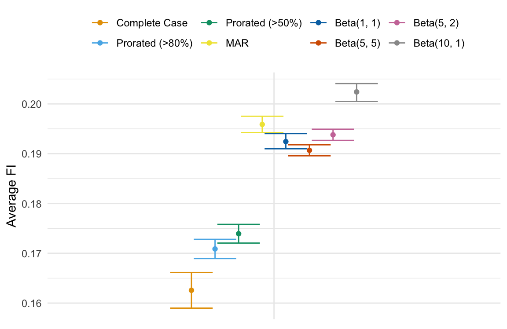

Evaluating missingness assumptions for items in a frailty index
Louisa Smith
SER: June 14, 2023
Department of Health Sciences
The Roux Institute
Northeastern University
Context: deficit-accumulation frailty index
Frailty is a syndrome of vulnerability more common in older adults
A frailty index is a quantitative measure of the aggregate burden of age-related health deficits

FI = # of deficits / # of possible deficits

- Large-scale NIH study to gather health data from 1 million+ Americans
- Focus on those underrepresented in biomedical research
- Multimodal data collection includes surveys, electronic health records, biospecimens, and more
AoU-FI
- 33 deficits based on items from multiple surveys
- Cover multiple domains, including comorbidities, function, cognition, mental health, and geriatric syndromes
- Cannot be weighted to heavily toward one domain (or it would be, e.g., a comorbidity index)
9.8% of 200,000+ participants had complete data
38% had data for >80% of deficits (>27/33)
Options for missing items in an index/scale
Complete-case
Exclude those with any missing items
Proration
Adjust denominator (person-mean imputation)
Multiple imputation
Of individual items / total score
Throwing away a lot of data, strong assumptions
Different weighting across domains
Computationally intensive, still requires assumptions
Pattern-mixture models for missingness “not at random” (MNAR)
Model how the distribution of missing data depends on missingness pattern
For example, a missingness pattern in which a given deficit is missing may be associated with a higher probability of that deficit
Can’t tell from the observed data – by definition we are missing the item in that missingness pattern
Sensitivity analysis via delta adjustment
A simple model for a single variable with missingness:
\[ E[Y \mid R, X] = \beta_0 + \beta_1X + \color{IndianRed}{\delta} I(R = \color{SlateBlue}{r_0}) \]
where \(\color{IndianRed}{\delta}\) parameterizes how much different the distribution (expectation) of \(Y\) is in observations with missing data patterns where it is missing (\(\color{SlateBlue}{r_0}\))
Multiple imputation
The delta adjustment approach can be done in the context of multiple imputation, e.g., with MICE
- Fit a model for the conditional expectation of \(Y\) as usual
- Add \(\delta\) to the modeled expectation and draw values of \(Y\)
- Analyze multiple datasets as usual
Shiny app to elicit parameters
Complications
With multiple missing variables, interpretation of sensitivity parameter \(\delta\) is different
- conditional on the missingness pattern of the other variables
- D. M. Tompsett et al. (2018) proposed a solution which involves eliciting more interpretable \(\delta\)-like parameters and searching the solution space for the \(\delta\)s they correspond to
- computationally infeasible with 33 missing items without further assumptions
Missingness patterns
For a given item \(Y\), we collapsed missingness patterns into:
- data on \(Y\) and all surveys completed (group A)
- data on \(Y\) but missing some surveys (group B)
- missing data on \(Y\) but completed survey (group C)
- missing survey on which \(Y\) is collected (group D)1
Interpretable parameters
Most items are binary
- Parameters on odds ratio scale suggested in literature
- “Non-respondents may have up to 1.3 times the odds of item compared to respondents who are similar in other ways”
- Even differences in means not particularly intuitive
- “Non-respondents may have up to 10 percentage points higher prevalence of item compared to respondents who are similar in other ways”
Standardized means seem more interpretable
Standardized means
- Fit a model for item among participants with complete data (group A), conditional on demographics, etc.
- Predict item prevalence among participants with other missing surveys, but complete item of interest (group B)
- Compare observed and predicted item prevalence in group B: differences are not accounted by demographics, instead by missing data pattern
This comparison makes specifying the sensitivity parameters more concrete
Experts in this population can combine with their knowledge
Shiny app to elicit parameters
Analysis: FI distribution
Synthetic AoU dataset
- complete case
- proration > 80% complete
- proration > 50% complete
- MAR (MICE with no delta-adjustment)
- MNAR, drawing sensitivity parameters from various distributions taking in account possible correlations
- draw from triangle distribution, individually
- compute rank within all draws
- draw across all items by rank to allow for correlation
Distributions of sensitivity parameters
Average FI age 50-55
Age differences in FI
Conclusions and future directions
Observations with missing data are quite different, but it’s not clear that reasonable non-random missingness makes any difference
- Deal with computational challenges
- Is it necessary to recompute frailty index in between every item?
- At what point is this necessary?
- “Tipping point” analysis
Thanks to Chelsea Wong MD, Ariela Orkaby MD, Brianne Olivieri-Mui PhD